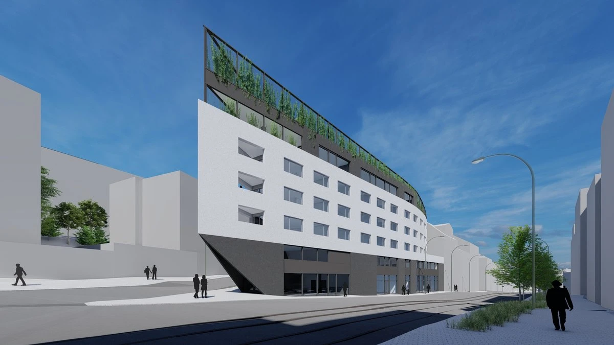
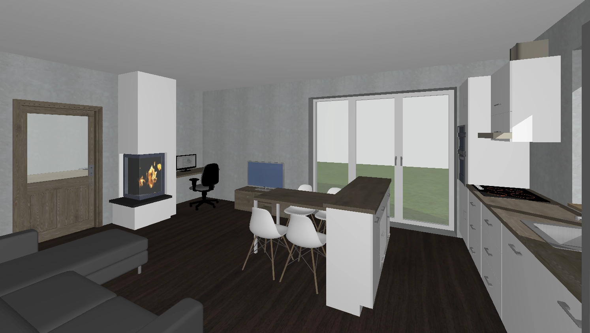
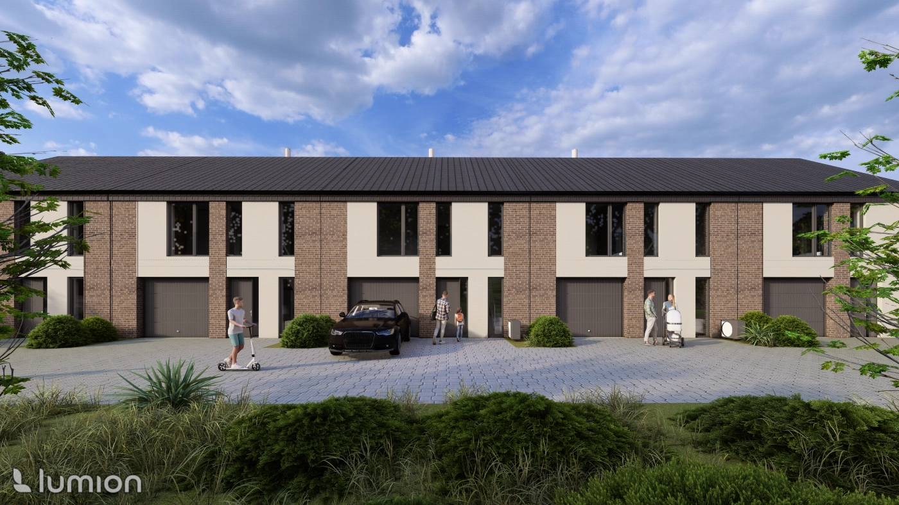

01
Výměnek pro mladý pár
Rodinné bydlení · 2026

Architektura · BIM · Dokumentace
Tvořím promyšlené prostory od první studie až po přesnou digitální dokumentaci.
Vybrané projektyProfil
Jsem zvídavá, kreativní a mám ráda výzvy. Inspiraci a nadhled čerpám z přírody a cestování. Ve své práci propojuji funkčnost, krásu a dlouhodobou udržitelnost.
Mám zkušenosti s architektonickými studiemi, dokumentací staveb, rekonstrukcemi, pasporty, BIM a zpracováním mračen bodů. Pracuji v Archicadu, Lumionu, InDesignu a Photoshopu.
Otevřít CV
Vybraná práce
Studie, realizace a digitální dokumentace napříč měřítky.

Rodinné bydlení · 2026

Rodinné bydlení · 2024

Diplomová práce · FA ČVUT

Architektonické vizualizace

Digitalizace · BIM

Interiér · Studie

Pasport · Mračno bodů

Bytové domy · Studie
Interaktivní prezentace
Portfolio je připravené pro modely ve formátu GLB. Návštěvník si bude moci stavbu otáčet, přiblížit a prohlédnout přímo v prohlížeči.
3D / BIMModel doplníme v další fázi
Kontakt